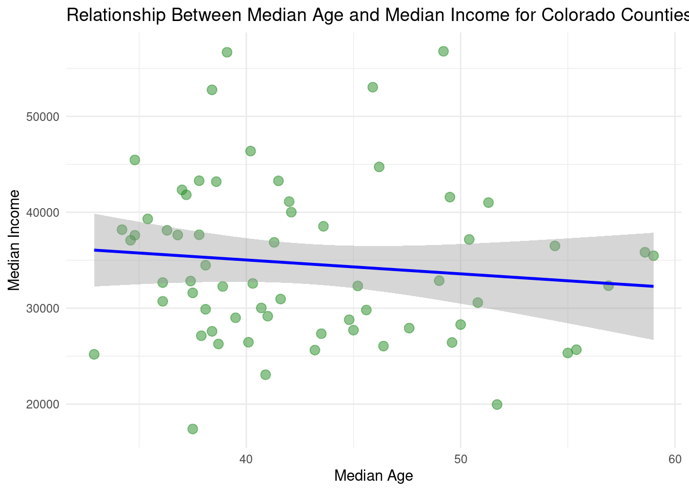
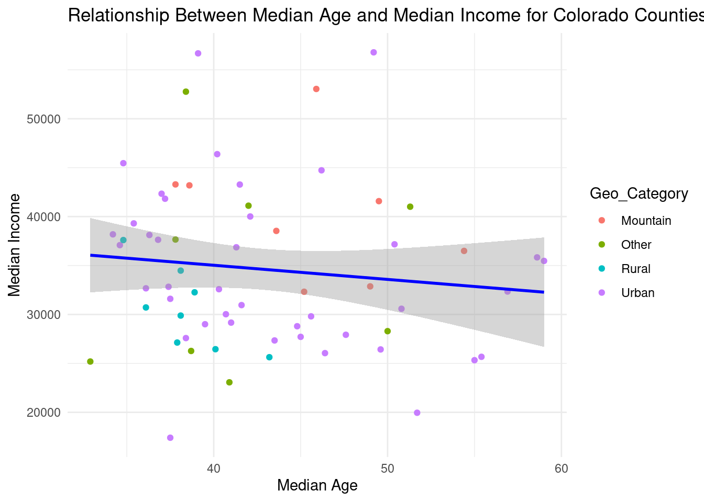
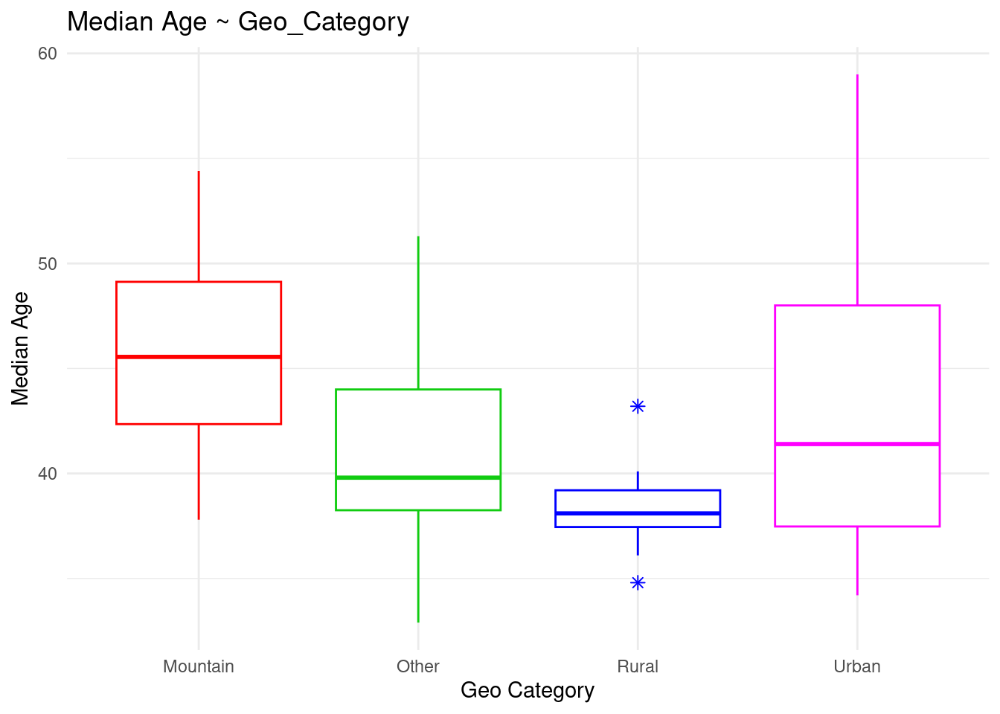
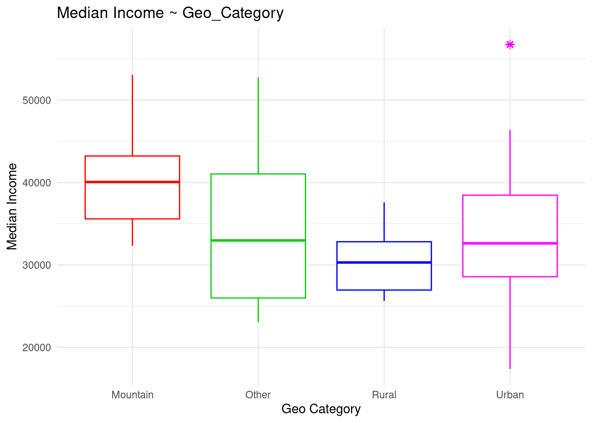
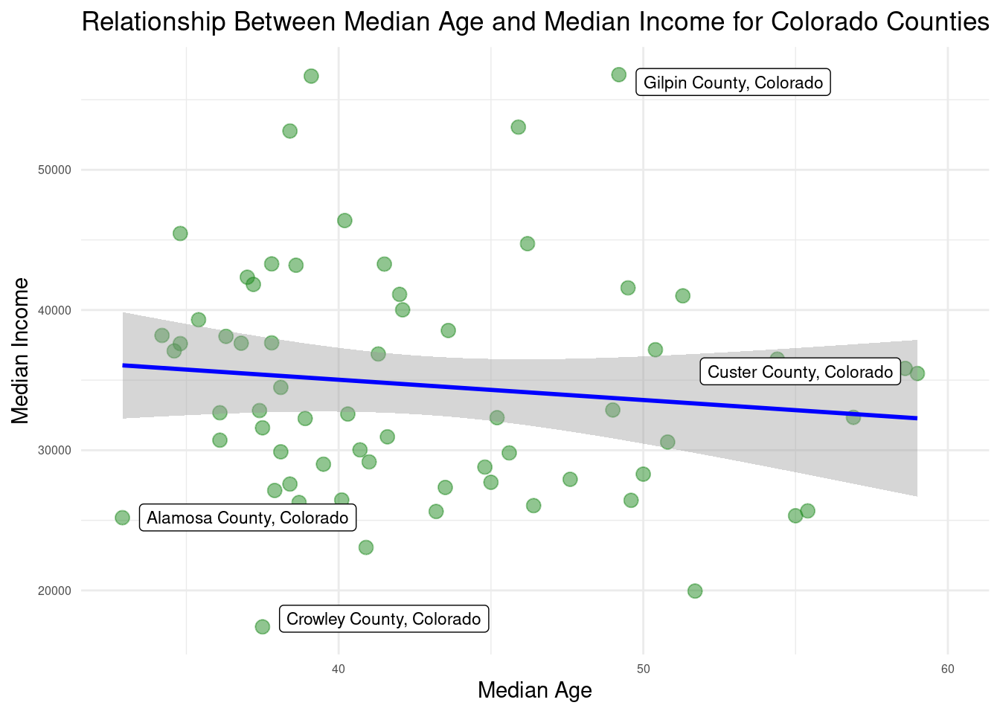

The question I am trying to answer is: “Do counties with younger populations make more money?” (i.e. is there a correlation between median age and median income?).
I am also choosing my wonderful home state of Colorado specifically for this one.
library(ggplot2)# Basic scatter plot with customized aestheticsggplot(dta, aes(x = medage, y = medincome)) +geom_point(color ="forestgreen", # Point colorsize =3, # Point sizealpha =0.5# Transparency ) +geom_smooth(method ="lm", # Use linear regression for the line of best fitse =TRUE, # Don't plot confidence intervalcolor ="blue", # Line colorlinetype ="solid"# Line type ) +theme_minimal() +labs(title ="Relationship Between Median Age and Median Income for Colorado Counties",x ="Median Age",y ="Median Income" )
`geom_smooth()` using formula = 'y ~ x'

As we can see, there is not a strong correlation at all, except maybe a slight negative correlation.
A look at county classification
In Colorado, there are 3 main type of geography… Mountain, Rural, and Urban. I break the counties up like that below and make them a factor variable.
I got these classifications from ChatGPT, however, if I had more time I would go back in and match the counties with their correct classifications from the .gov data. I would also look into more specific classifications, but I used Mountain, Rural, and Urban just from my own experience.
dta <- dta %>%mutate(Geo_Category =case_when( NAME %in%c("Pitkin County, Colorado", "Summit County, Colorado", "Eagle County, Colorado", "Clear Creek County, Colorado", "Ouray County, Colorado", "San Juan County, Colorado", "Grand County, Colorado", "Chaffee County, Colorado" ) ~"Mountain", NAME %in%c("Weld County, Colorado", "Morgan County, Colorado", "Logan County, Colorado", "Yuma County, Colorado", "Kit Carson County, Colorado", "Otero County, Colorado", "Prowers County, Colorado", "Baca County, Colorado" ) ~"Rural", NAME %in%c("Denver County, Colorado", "El Paso County, Colorado", "Arapahoe County, Colorado", "Jefferson County, Colorado", "Adams County, Colorado", "Boulder County, Colorado", "Larimer County, Colorado", "Douglas County, Colorado", "Fremont County, Colorado", "Garfield County, Colorado", "Gilpin County, Colorado", "Gunnison County, Colorado", "Hinsdale County, Colorado", "Huerfano County, Colorado", "Jackson County, Colorado", "Kiowa County, Colorado", "Lake County, Colorado", "La Plata County, Colorado", "Las Animas County, Colorado", "Lincoln County, Colorado", "Mesa County, Colorado", "Mineral County, Colorado", "Moffat County, Colorado", "Montezuma County, Colorado", "Montrose County, Colorado", "Pueblo County, Colorado", "Rio Blanco County, Colorado", "Rio Grande County, Colorado", "Routt County, Colorado", "Saguache County, Colorado", "San Juan County, Colorado", "San Miguel County, Colorado", "Sedgwick County, Colorado", "Summit County, Colorado", "Teller County, Colorado", "Washington County, Colorado","Elbert County, Colorado", "Costilla County, Colorado", "Crowley County, Colorado","Custer County, Colorado", "Delta County, Colorado", "Dolores County, Colorado","Gunnison County, Colorado", "Jefferson County, Colorado", "Rio Grande County, Colorado","Jefferson County, Colorado", "Hinsdale County, Colorado", "Pitkin County, Colorado","Mineral County, Colorado", "Huerfano County, Colorado", "Grand County, Colorado","Gunnison County, Colorado", "Montrose County, Colorado", "Grand County, Colorado","Custer County, Colorado", "Rio Blanco County, Colorado", "Routt County, Colorado" ) ~"Urban",TRUE~"Other"))library(forcats)as.factor(dta$Geo_Category)
[1] Urban Other Urban Other Rural Other Urban Other
[9] Mountain Other Mountain Other Urban Urban Urban Urban
[17] Urban Urban Urban Mountain Urban Urban Urban Urban
[25] Urban Mountain Urban Urban Urban Urban Urban Urban
[33] Rural Urban Urban Urban Urban Urban Rural Urban
[41] Urban Urban Urban Urban Rural Rural Mountain Other
[49] Other Mountain Rural Urban Urban Urban Urban Urban
[57] Mountain Urban Urban Mountain Urban Urban Rural Rural
Levels: Mountain Other Rural Urban
Let’s graph it with our new factor variable to see if that tells us anything cool!
ggplot(dta, aes(x = medage, y = medincome, color = Geo_Category)) +geom_point() +geom_smooth(method ="lm", # Use linear regression for the line of best fitse =TRUE, # Don't plot confidence intervalcolor ="blue", # Line colorlinetype ="solid"# Line type ) +theme_minimal() +labs(title ="Relationship Between Median Age and Median Income for Colorado Counties",x ="Median Age",y ="Median Income" )
`geom_smooth()` using formula = 'y ~ x'

This is interesting. It doesn’t look like there’s much distinction with Urban because it is so spread out, but it seems that Mountain counties have a higher median income than Rural, and are also, for the most part, older.
However, this isn’t anything definitive so let’s keep looking.
Boxplots by Classification
ggplot(dta, aes(x=Geo_Category, y=medage)) +geom_boxplot( colour=c("#ff0000","#11cc11","#0000ff","#ff00ff"), outlier.shape=8, outlier.size=2) +labs(title="Median Age ~ Geo_Category", x="Geo Category", y ="Median Age") +theme_minimal()

ggplot(dta, aes(x=Geo_Category, y=medincome)) +geom_boxplot( colour=c("#ff0000","#11cc11","#0000ff","#ff00ff"), outlier.shape=8, outlier.size=2) +labs(title="Median Income ~ Geo_Category", x="Geo Category", y ="Median Income") +theme_minimal()

Very Cool! It showed me what I suspected from the factored scatter plot, so let’s do an ANOVA test to see if I’m actually right.
Df Sum Sq Mean Sq F value Pr(>F)
Geo_Category 3 241.4 80.45 1.933 0.134
Residuals 60 2497.7 41.63
As we can see, the p-value is 0.1339287 which is > 0.05 so we fail to reject the null hypothesis, and we can’t say anything about the correlation between median age and geo_category.
Df Sum Sq Mean Sq F value Pr(>F)
Geo_Category 3 383291953 127763984 1.904 0.139
Residuals 60 4025210091 67086835
Here, the p-value is 0.1385016 which is > 0.05 so we fail to reject the null hypothesis, and we can’t say anything about the correlation between median age and geo_category.
Pearson's product-moment correlation
data: dta$medage and dta$medincome
t = -0.90398, df = 62, p-value = 0.3695
alternative hypothesis: true correlation is not equal to 0
95 percent confidence interval:
-0.3500520 0.1355528
sample estimates:
cor
-0.1140569
As we can see, we have a correlation of -0.1140569, which makes sense because that’s what our LM line in the scatter plot showed. Unfortunately, our p-value is 0.3695, which is sort of small, but not small enough to fail to reject the null hypothesis. So, we cannot officially say that there is a correlation between median income and median age in colorado.
HOWEVER, there are still some very interesting things to look at here. Let’s take a look at our outliers.
library(ggrepel)max_income_row <- dta[which.max(dta$medincome), ]# Find the row with the minimum medincomemin_income_row <- dta[which.min(dta$medincome), ]# Find the row with the maximum medagemax_age_row <- dta[which.max(dta$medage), ]# Find the row with the minimum medagemin_age_row <- dta[which.min(dta$medage), ]ggplot(dta, aes(x = medage, y = medincome)) +geom_point(color ="forestgreen", # Point colorsize =3, # Point sizealpha =0.5# Transparency ) +geom_smooth(method ="lm", # Use linear regression for the line of best fitse =TRUE, # Don't plot confidence intervalcolor ="blue", # Line colorlinetype ="solid"# Line type ) +geom_label_repel(data =rbind(max_income_row, min_income_row, max_age_row, min_age_row),aes(label = NAME),box.padding =0.5,point.padding =0.1,force =2,color ="black",size =3,nudge_x =1, # Adjust these nudge values to position labelsnudge_y =1) +theme_minimal() +theme(axis.text =element_text(size =6)) +labs(title ="Relationship Between Median Age and Median Income for Colorado Counties",x ="Median Age",y ="Median Income" )
`geom_smooth()` using formula = 'y ~ x'

Now that we can see our extreme outliers here, I would look into these specific counties and potentially write an interesting story. For example, Crowley County is fairly urban, but the median income is super low. What’s the deal with that?
Crowley County
From a quick search, I can see that Crowley County is in Southeastern Colorado. From my own experience, I know that Southeastern Colorado has a big problem with the Opioid Epidemic. I wonder if this is a contributing factor.
Another quick Google search leads me here. As it turns out, Crowley County is one of the few counties in Colorado to receive money from the Colorado opioid relief fund. I don’t want to say anything definitive, but it would be very interesting to look into this area and see why their median income is so low.